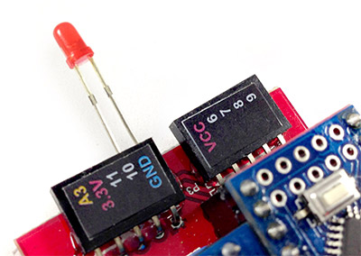
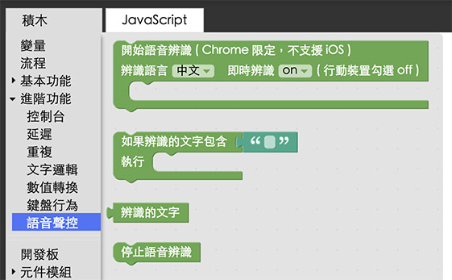
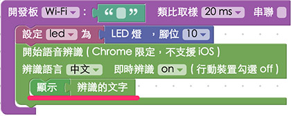
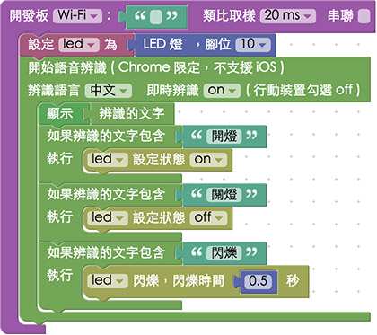
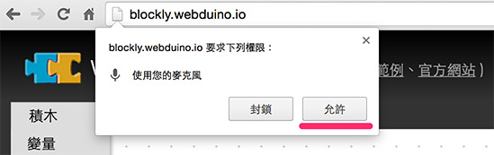
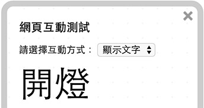

教學範例 22：語音聲控 LED 燈
因為 Webduino 可以使用瀏覽器 Chrome 來操控各種電子零件，因此 Chrome 具備的功能也都能夠順利成章的使用，在這個範例裡面我們將會使用 Chrome 內建的 Speech API，透過 Google 的語音辨識功能，輕鬆實現語音聲控 LED 燈的效果 ( 同樣的方式也可以應用在繼電器上，就可以變成語音聲控電燈泡、門鎖或家電 )。
範例影片展示
接線與實作
因為這個範例只需要用到一顆 LED 燈，所以接線方式很簡單，首先，LED 燈有「長短腳」之分，長腳接「高電位」( 帶有數字的腳位 )，短腳接「低電位」( GND、接地 )，因此我們只要直接將 LED 插到腳位上即可，或使用麵包板與麵包線外接出來，在這裡長腳接 10，短腳接 GND。
馬克一號接線示意圖：

Fly 接線示意圖：

實際接線照片：

Webduino Blockly 操作解析
打開 Webduino Blockly 編輯工具 ( https://blockly.webduino.io )，因為這個範例會「先」用網頁「顯示文字」來顯示我們語音辨識出來的文字，所以要先點選右上方「網頁互動測試」的按鈕，打開內嵌測試的網頁，用下拉選單選擇「顯示文字」。

把開發板放到編輯畫面裡，填入對應的 Webduino 開發板名稱，開發板內放入 LED 的積木，名稱設定為 led，腳位設定 10。

如果要使用語音聲控，點選左側「進階功能」的選項，選擇「語音聲控」，裡面就會有對應的積木。

我們把「開始語音辨識」的積木放到開發板內，要注意的是，如果選擇「中文」語音，就只能辨識中文，不然會把念出來的英文，辨識為很奇怪的中文 ( 例如 good 可能會辨識成「固的」 )，如果要講英文，就選擇「English」。

語音辨識積木的第二個選項：「即時辨識」，如果選擇「on」，表示我們講的每個字都會即時辨識出來，如果選擇「off」，則會在一段話停頓的時候 ( 由系統自動判斷何時叫做停頓 )，才會辨識一整段話出來，因此如果是使用「電腦」版本的瀏覽器，建議使用即時辨識，這樣語音聲控的效果會更好，不過如果是行動裝置，即時辨識一定要設定為「off」( 行動裝置預設值 )，而且也只有 Android 手機才能使用，要特別注意！

接著先放入「顯示文字」的積木來顯示辨識文字，這樣才可以看到我們講出來的文字是什麼。

然後放入「如果辨識的文字是什麼，就執行什麼」的積木，把我們的語音命令寫在裡面，這個範例表示我們講「開燈」LED 就會亮，「關燈」就會熄滅，「閃爍」就會開始閃爍。

如果要可以支援多種指令，我們可以利用「列表」的方式，把各個指令列出來就可以了。

確認開發板上線 ( 點選「檢查連線狀態」查詢 )，點選紅色的執行按鈕，基本上會彈出一個是否允許啟用麥克風的選項，點選「允許」。

接著就可以開始講話，用語音聲控 LED 燈了。( 解答：https://blockly.webduino.io/#-K8jMTLqExEaa7YlqKCN )

範例解析 ( 完整程式碼、檢查連線狀態 )
HTML 的 header 引入 webduino-all.min.js，目的在讓瀏覽器可以支援 WebComponents 以及 Webduino 所有的元件，如果是用 Blockly 編輯工具產生的程式碼，則要額外引入 webduino-blockly.js。
<script src="https://webduino.io/components/webduino-js/dist/webduino-all.min.js"></script>
<script src="https://webduinoio.github.io/webduino-blockly/webduino-blockly.js"></script>
HTML 裏頭只有一個 span，用來顯示語音辨識出來的文字。
<span id="demo-area-01-show">123</span>
JavaScript 最主要用了webkitSpeechRecognition()這個 Chrome 內建語音辨識的物件，根據不同的屬性，例如continuous、interimResults和lang就可以針對語音辨識做一些設定，而語音辨識會回傳一個onresult的屬性，裡面就會有辨識出來的文字，而我們便將判斷式寫在裡頭，判斷如果有我們的指令文字，就會執行某些動作。
var led;
boardReady('', function (board) {
board.samplingInterval = 20;
led = getLed(board, 10);
function speechRecognition(){
if (!("webkitSpeechRecognition" in window)) {
alert("本瀏覽器不支援語音辨識，請更換瀏覽器！(Chrome 25 版以上才支援語音辨識)");
} else{
window._recognition = new webkitSpeechRecognition();
window._recognition.continuous = true;
window._recognition.interimResults = true;
window._recognition.lang = "cmn-Hant-TW";
window._recognition.onstart = function() {
console.log("Start recognize...");
};
window._recognition.onend = function() {
console.log("Stop recognize");
};
window._recognition.onresult = function(event,result) {
result = {};
result.resultLength = event.results.length-1;
result.resultTranscript = event.results[result.resultLength][0].transcript;
if(event.results[result.resultLength].isFinal===false){
console.log(result.resultTranscript);
document.getElementById("demo-area-01-show").innerHTML = result.resultTranscript;
if(result.resultTranscript.indexOf("開燈")!==-1){
led.on();
}
if(result.resultTranscript.indexOf("關燈")!==-1){
led.off();
}
if(result.resultTranscript.indexOf("閃爍")!==-1){
led.blink(0.5*1000);
}
}else if(event.results[result.resultLength].isFinal===true){
console.log("final");
}
};
window._recognition.start();
}
}
speechRecognition();
});
以上就是語音聲控的 Blockly 和程式碼簡介。
完整程式碼：http://bin.webduino.io/fexic/edit?html,js,output
解答：https://blockly.webduino.io/#-K8jMTLqExEaa7YlqKCN
如果您還想了解更多，可以參考：
2. Blockly 教學：https://goo.gl/h6s7GY
3. 產品總覽：https://webduino.io/buy.html
4. 露天賣場：http://goo.gl/0Dj9ip